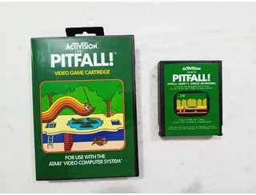

Atari CX40 Joystick (Posse de Vitória Maria)

Atari CX40
O Atari CX40 é o joystick que se tornou um dos maiores símbolos
associados ao Atari 2600. Lançado originalmente junto à família
Atari VCS, o controle apresenta uma construção extremamente
simples, baseada em uma alavanca direcional e um único botão
de ação.
Apesar de sua simplicidade, o CX40 foi projetado para oferecer
uma solução universal para os jogos do Atari, utilizando uma
conexão de nove pinos que permitia que diferentes controles e
periféricos fossem conectados ao console.
Seu formato vertical, a alavanca preta e o grande botão vermelho
localizado no canto superior esquerdo acabaram se tornando
elementos visuais extremamente reconhecíveis da primeira geração
de consoles domésticos.
Contexto Histórico


O CX40 surgiu durante um período em que os controles dos consoles
domésticos ainda estavam longe de possuir o formato padronizado
que se tornaria comum nas décadas seguintes.
Antes da popularização dos direcionais digitais em formato de
cruzeta, fabricantes experimentavam diferentes soluções para
permitir que o jogador controlasse os objetos na tela.
A Atari adotou uma abordagem extremamente direta: uma haste
mecânica capaz de detectar quatro direções e um botão independente
para a ação principal do jogo.
Essa simplicidade combinava perfeitamente com a filosofia do Atari
2600. O console possuía hardware relativamente limitado e muitos
jogos precisavam utilizar controles igualmente simples para
transformar os movimentos físicos do jogador em comandos
eletrônicos.
Construção e Design
O CX40 possui uma construção baseada em uma carcaça plástica
vertical. A parte superior concentra os elementos utilizados
diretamente pelo jogador, enquanto a parte inferior serve como
base para a mão durante a utilização.
No topo encontra-se a haste direcional, geralmente conhecida
simplesmente como joystick. A haste pode ser movimentada para
cima, baixo, esquerda e direita, acionando os contatos mecânicos
existentes no interior do controle.
Ao lado da haste encontra-se o botão de disparo, conhecido como
Fire. Nos modelos clássicos ele possui a característica cor
vermelha que ajudou a tornar o controle visualmente reconhecível.
Internamente, o CX40 é ainda mais simples. Grande parte de seu
funcionamento depende de contatos elétricos mecânicos, dispensando
microprocessadores, firmware ou circuitos eletrônicos complexos.
Funcionamento
Diferentemente dos controles modernos, o CX40 não precisa
interpretar digitalmente os comandos utilizando um processador
próprio.
Quando a alavanca é movimentada, mecanismos internos pressionam
contatos correspondentes às quatro direções. Esses contatos
alteram eletricamente o estado dos sinais enviados ao console.
O botão Fire funciona de maneira semelhante. Ao ser pressionado,
seu contato elétrico é fechado e o Atari 2600 detecta a mudança
no sinal proveniente da porta do controle.
Dessa maneira, o console consegue determinar se o jogador está
pressionando esquerda, direita, cima, baixo ou o botão de ação
sem que o próprio joystick precise possuir um processador.
Conexão DB9
Uma das características mais importantes do CX40 é seu conector
de nove pinos, conhecido popularmente como DB9.
O conector permite transportar individualmente os sinais
correspondentes às diferentes direções, ao botão de ação e aos
circuitos elétricos necessários para o funcionamento do controle.
Essa arquitetura acabou sendo extremamente importante para a
história dos videogames porque diversos computadores e consoles
posteriores utilizaram conectores compatíveis ou semelhantes.
Por isso, controles inspirados no padrão do Atari podem ser
encontrados em diversos computadores domésticos e equipamentos
produzidos durante as décadas de 1980 e 1990.
Jogos e Compatibilidade


O CX40 podia ser utilizado em uma grande quantidade de jogos
desenvolvidos para o Atari 2600. Títulos como Space Invaders,
Asteroids, Missile Command, Pitfall!, River Raid e muitos outros
utilizavam comandos compatíveis com o joystick convencional.
Entretanto, nem todos os jogos do Atari utilizavam exatamente
o mesmo tipo de controle. Alguns títulos foram desenvolvidos
especificamente para paddles, enquanto outros utilizaram
periféricos diferentes.
Isso fazia parte da filosofia do Atari 2600: o console poderia
receber diferentes periféricos através de suas portas de controle,
permitindo que um mesmo sistema tivesse experiências de jogo
bastante diferentes.
CX40 vs. Paddles
O CX40 não deve ser confundido com os Atari Paddles, como o CX30.
Enquanto o joystick trabalha principalmente com comandos
direcionais discretos, os paddles utilizam controles rotativos
capazes de fornecer uma posição contínua.
Jogos como Pong e Breakout foram desenvolvidos para aproveitar
esse tipo de controle, permitindo que o jogador movimentasse
objetos horizontalmente através da rotação do paddle.
Assim, apesar de ambos serem conectados às mesmas portas gerais
do console, seus princípios de funcionamento e suas experiências
de jogo são bastante diferentes.
Legado
O CX40 se tornou um dos controles mais reconhecíveis da história
dos videogames.
Seu formato simples ajudou a estabelecer uma ideia que seria
repetida inúmeras vezes posteriormente: um controle dedicado
poderia ser conectado ao console e substituído quando necessário,
sem que o jogador precisasse adquirir um novo sistema inteiro.
A simplicidade do projeto também contribuiu para sua longevidade.
Mesmo décadas após o lançamento do Atari 2600, controles baseados
no mesmo princípio continuam sendo utilizados por colecionadores,
projetos de restauração e reproduções modernas de consoles
clássicos.
Modelos e Variações
Durante a vida comercial do Atari 2600 existiram diferentes
versões, revisões e reproduções do joystick clássico.
Algumas alterações estavam relacionadas à construção da carcaça,
enquanto outras modificavam detalhes internos, materiais utilizados
e métodos de montagem.
Também surgiram inúmeros controles de terceiros compatíveis com
o Atari 2600, alguns tentando reproduzir fielmente o CX40 e outros
oferecendo formatos ou características diferentes.


Curiosidades
O CX40 é frequentemente lembrado não apenas como um acessório,
mas como parte da própria identidade visual do Atari 2600.
A combinação entre a base preta, a haste vertical e o botão
vermelho se tornou tão associada ao console que uma imagem do
joystick isolado pode ser suficiente para remeter imediatamente
ao Atari.
Outra característica interessante é que seu funcionamento
essencialmente mecânico torna o controle relativamente fácil de
compreender e reparar quando comparado aos controles modernos,
embora o estado dos contatos, da borracha e dos mecanismos internos
possa variar conforme idade e uso.